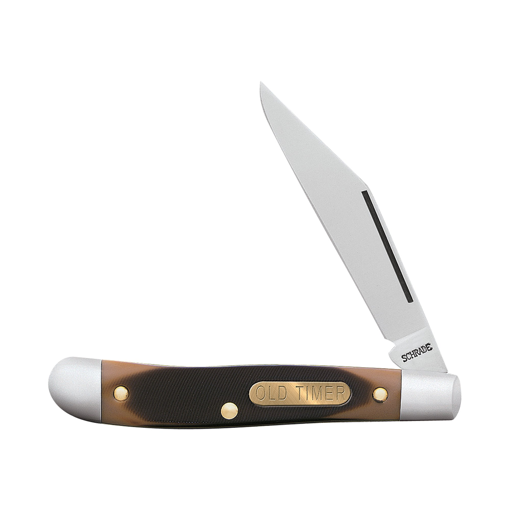

Here I will talk about some of my collection and hopefully get you into this growing hobby!
Today pocket knives are not only useful tools in everyday life they are also a way to express yourself much like watches.

Home Spyderco Positron Benchmade Griptillian Kershaw Launch 3